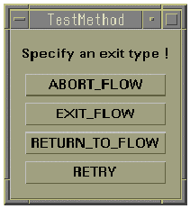

SET_EXCEPTION_HANDLER
This API sets one of the system-supplied error handlers for a fatal error that occurred in the specified API category. If a fatal error that aborts the current test program execution occurs in an API in the specified API category, the error handler is executed.
In addition to the system-supplied error handlers, you can also specify your custom function in the test method shared library to be used currently, as an error handler.
The behavior of the default test method exception handler is like below.
- If the test method process crashes, the test suite will be consider failed, the current testflow execution for all sites will be stopped and binned to the otherwise bin, no matter a bin was assigned to the test suite or not.
- If there is an unhandled exception and no exception handler is registered, the test suite will be consider failed, the current testflow execution will be stopped for all sites and binned to the otherwise bin, no matter a bin was assigned to the test suite or not.
- If an exception handler is registered, the exception handler will be called first and you can decide whether to continue or abort the testflow execution in the handler.
- If the exception happened in the first invocation block, the testflow execution for all sites will be stopped and binned to the otherwise bin.
This API is defined in the header file /opt/hp93000/soc/prod_com/include/MAPI/ExceptionHandler.h.
The tm_crash_as_fatal will be evaluated firstly:
- When it is off: all affected sites are binned to the otherwise bin. Use this setting if your test method code can handle a restart of the test method process at any time (for example proper re-initialization of all your cached data) and you want to continue the lot testing.
- When it is on: all of the not-binned sites are binned to the otherwise bin. Use this setting if you don´t allow any unhandled issue in the test program. However, the lot testing will be aborted in case an issue happens.
Syntax
For setting up one of the system-supplied error handlers
SET_EXCEPTION_HANDLER(TM::EXIT_CASE case, TM::EXIT_TYPE type);
For setting your custom function as an error handler
SET_EXCEPTION_HANDLER(TM::EXIT_CASE case, TM::EXIT_TYPE *func, void *arg);
For setting up the error handler setting retrieved by the GET_EXCEPTION_HANDLER API
SET_EXCEPTION_HANDLER(GET_EXCEPTION_HANDLER& restore);
I/O |
Parameter |
Description / Range |
|---|---|---|
I |
case |
An API category for which you want to set an error handler. This must be one in TM::EXIT_CASE. See Important Points. No default value is defined. |
I |
type |
An error handler that you want to set. This must be one in TM::EXIT_TYPE. See Important Points. No default value is defined. |
I |
func |
The custom function name to be used as an error handler. This is the pointer to the function. If you set this pointer, the function that is pointed to will be called when an error occurs in the specified API category. Declare this as a global or static variable if necessary. The function has to return a value as TM::EXIT_TYPE. This API needs to refer to the returned value. See Important Points. |
I |
arg |
The void pointer for data to be handed to the custom function. This parameter allows you to handle any data type of data. Declare this as a global or static variable if necessary. This void pointer is given to the second argument of the custom function. If you do not need to give data to the custom function, specify 0. For SmarTest revision 4.3 or earlier on the HP-UX operating system, you can also use the "NULL" pointer instead of "0". See Important Points. |
I |
restore |
The error handling setting retrieved by the GET_EXCEPTION_HANDLER API. This parameter is a GET_EXCEPTION_HANDLER class object. |
Important points
- You can select an API category for which you want to set an error handler by specifying the
case parameter.
The system supports the enumerator TM::EXIT_CASE for the case parameter as follows:
SETUP, EXECUTE, RESULT, COMPUTATION, TEST_CONTROL, DC_TEST, GPIB, MULTI_SITE, MISC, DIGITAL_TEST, SPECSEARCH, SEQUENCER_CONTROL, COMMON_CLASS, TESTMETHOD or ALL.
This category corresponds perfectly to the grouping of the Test Method Panel's menu, except for ALL.
- You can select how to terminate the current testflow or test program execution by specifying
the type parameter. The system supports the enumerator
TM::EXIT_TYPE for the type parameter as
follows:
Error Handler Type (TM::EXIT_TYPE)
Description
ABORT_FLOW
All sites that have not been binned yet will be aborted and binned to the otherwise bin.
The testflow execution ends after the current run. It needs user interaction to restart the next testflow execution.
EXIT_FLOW
All sites of the current test suite, which are to be executed, are sent to the otherwise bin.
All other sites continue their normal flow logic. There is no termination at the end of the current testflow execution.
EXIT_TO_BIN
A failing site of the current test suite is disconnected and sent to the otherwise bin. Test suite execution continues with the other sites. There is no termination at the end of the current testflow execution.
RETURN_TO_FLOW
For the current test site the test method execution is terminated and the test suite is set to fail (continues a fail branch in case of a "run and branch" node). The test method will be called for all the remaining sites without any more special handling.
RETRY
For the current test site the test method execution is retried after the current result is logged as unreliable.
INTERACTIVE
A dialog box opens. You can select one of the above error handler actions in the dialog box interactively.
THROUGH
The test method program execution is continued even if an error occurs. Note that this is valid only for GPIB and Computation API (GPIB_XXXX and DSP_XXXX).
NONE
No exception is thrown. The previously installed exception handlers will be removed.
Note that the TM::RETRY repeats the program execution until no fatal error occurs for the specified API category. Avoid specifying the TM::RETRY for a fatal error that occurs with very high frequency.
- If the SET_EXCEPTION_HANDLER is executed, it sets the error handler
in a testflow globally; that is, it is effective for all subsequent test method programs.
Therefore, it is advisable to use this API at the beginning of the testflow or the
testmethod-based testsuites. You do not need to use this API in every test method program.
If you set an error handler for TM::ALL (all API categories) then set another error handler for a certain API category, it means to except the latter setting from the former setting. As a result, they set up different error handlers for the particular API category and other API categories.
SET_EXCEPTION_HANDLER(TM::ALL, TM::ABORT_FLOW);
SET_EXCEPTION_HANDLER(TM::COMPUTATION, TM::THROUGH);
In this example, the error handler ABORT_FLOW is set for all API categories except the computation API category, and the error handler THROUGH is set for the computation API category only.
- If you set the type parameter to TM::INTERACTIVE, the following dialog box opens when an error occurs in the specified API category. You can select one of the four error handler actions in the dialog box manually.

- If you set the type parameter to TM::NONE, this API can reset the current error handler for the specified API category.
- To set up a custom function as an error handler, consider the following topics:
- The type of a custom function must be defined as TM::EXIT_TYPE, and it must return a value as TM::EXIT_TYPE at the end of the function. This means to specify how to terminate the testflow or program execution after running your function code.
- The following shows the skeleton of a custom function program.
TM::EXIT_TYPE Func_Name(const EXCEPTION_INFO& info, void* arg) { //Your Error Handler Program return TM::ABORT_FLOW; //return one of TM::EXIT_TYPE }- You must declare the following two arguments for the custom function:
const EXECPTION_INFO& info
In your custom function, you can refer to the error information using the object info and the member functions of this special class EXECPTION_INFO below.
info.getExitCase():
One of TM::EXIT_CASE is returned. This indicates an error and its API category.
info.getName():
The name of the API where an error occurred is returned as string data.
info.getMessage():
Issued error message for the API is returned as string data.
void *arg
You can receive any data type of data from the arg parameter of the SET_EXCEPTION_HANDLER. In your custom function, cast the received data to your preferred data type.
If you do not use this parameter, declare a dummy variable to the second argument of your custom function and specify 0 to the arg parameter of SET_EXCEPTION_HANDLER.
- The restore parameter is useful when you want to pass the error
handler setting retrieved by the GET_EXCEPTION_HANDLER API to
SET_EXCEPTION_HANDLER.
For example, it is very easy to return to the original error handler when you switch the error handler temporarily. In this case, you retrieve the current error handler setting by the GET_EXCEPTION_HANDLER API. The setting data is returned as an object of the GET_EXCEPTION_HANDLER class. Then, after you switch the error handler temporarily, use SET_EXCEPTION_HANDLER with the restore parameter to return the error handler to the previous setting.
Examples
Set the GPIB and computation exception
SET_EXCEPTION_HANDLER(TM::GPIB, TM::RETRY); SET_EXCEPTION_HANDLER(TM::COMPUTATION,TM::THROUGH);
The first SET_EXCEPTION_HANDLER sets to retry the current testsuite execution if a fatal error occurs in the GPIB API category. Then, the second SET_EXCEPTION_HANDLER sets to ignore a fatal error that has occurred in the computation API category.
Set exception with custom function
/*The function ErrHandler is put before the class test method definition*/
static TM::EXIT_TYPE ErrHandler(const EXCEPTION_INFO& info, void *arg)
{
static int called = 0;
if (info.getExitCase() == TM::GPIB && called == 0)
{
called++;
// Clean up external instruments
return TM::RETRY;
}
else
{
cout << info.getName() << endl;
cout << info.getMessage() << endl;
return TM::ABORT_FLOW;
}
}
...
virtual void run()
{
SET_EXCEPTION_HANDLER(TM::ALL, ErrHandler, 0);
SET_EXCEPTION_HANDLER(TM::COMPUTATION, TM::THROUGH);
return;
}By two SET_EXCPTION_HANDLER APIs, the error handler that calls the custom function ErrHandler is set for all API categories except the computation API category, and the error handler TM::THROUGH that ignores the error is set for the computation API category only.
If a fatal error occurs in all API categories except the computation API category, the program will call the custom function ErrHandler. This function checks the API category of the error and the frequency of the error occurrence.
If they are the GPIB API category of the error and the first error, the counter of the error occurrence is increased; then your clean-up routine for the GPIB instrument is executed and the current test is retried.
Otherwise, the program displays the name of the API where the error occurred and the error message in the report window with two cout statements; then the testflow execution is terminated.
If a fatal error occurs in the computation API category, the error is ignored and program execution goes to the next statement of the API where the error occurred.
Functional changes
- Introduced before SmarTest 6.3.2
- SmarTest 7.2.1: New option TESTMETHOD for TM::EXIT_CASE.
- SmarTest 7.3.1: Modified the functionality of the exit type TM::EXIT_FLOW.